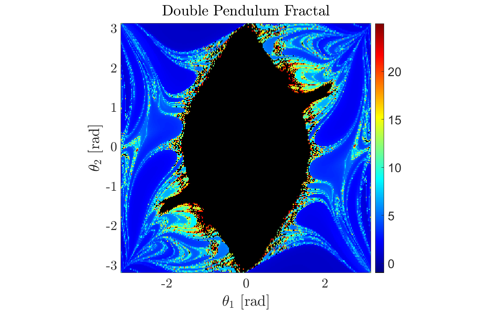

Contents
Double Pendulum Fractal Map
Author: Tyler Jones Contact: tjjones6@wisc.edu Institution: University of Wisconsin-Madison Date: 05.27.2024
Description: This script simulates a double pendulum system and generates a fractal map that illustrates the behavior of the system for various initial conditions. The simulation uses the ODE45 solver to numerically integrate the equations of motion, capturing the time at which the second pendulum flips. The resulting data is visualized in a heatmap, where each point represents the time of the flip for a specific set of initial angles.
Analysis: https://tjjones6.github.io/DoublePendulum/
close all; clear all; clc;
User Input
g = 9.80665; % Acceleration due to gravity (m/s^2) L1 = 1.0; % Length of the first pendulum arm (m) L2 = 1.0; % Length of the second pendulum arm (m) m1 = 1.0; % Mass of the first pendulum bob (kg) m2 = 1.0; % Mass of the second pendulum bob (kg) % Initial Conditions fidelity = 250; % Controls the number of gridpoints theta1 = linspace(-pi,pi,fidelity); % Initial angle of the first pendulum (radians) theta2 = linspace(-pi,pi,fidelity); % Initial angle of the second pendulum (radians) omega1_0 = 0; % Initial angular velocity of the first pendulum (rad/s) omega2_0 = 0; % Initial angular velocity of the second pendulum (rad/s) % Time Span of Simulation t_final = 25; % (s) tspan = [0 t_final];
Numerical Integration using ODE45
% Initialize a matrix to store the flip times flipTimes = NaN(fidelity, fidelity); % WARNING: Must have the parallel computing toolbox installed. Otherwise % replace 'parfor' with 'for' loop tic % Not needed, but keeps track of how long the code runs parfor i = 1:fidelity % Uncomment below if using a simple for loop % clc % fprintf('Map Completed: %.2f%%\n', i/fidelity*100) for j = 1:fidelity % Set initial conditions for the current pair of angles IC = [theta1(i), omega1_0, theta2(j), omega2_0]; % Use ODE45 to integrate until the event (flip) occurs options = odeset('RelTol', 1e-6, 'AbsTol', 1e-6, 'Events', @stopEvent); [~, ~, t_event, ~, ~] = ode45(@(t, y) doublePendulumODE(t, y, g, L1, L2, m1, m2), tspan, IC, options); % Store the time of the event (flip) if it occurred if ~isempty(t_event) flipTimes(i, j) = t_event(1); end end end toc
Elapsed time is 89.751643 seconds.
Plotting Results
% Set NaN values to a specific number outside the range of normal flip times flipTimesWithNaN = flipTimes; flipTimesWithNaN(isnan(flipTimes)) = NaN; % Transpose the data to correct orientation if necessary flipTimesWithNaN = flipTimesWithNaN'; % Create a custom colormap cmap = colormap(jet); cmap = [0 0 0; cmap]; % Add black color for NaN values % Plotting the fractal map using a heatmap figure('units','normalized','Position',[0.1 0.1 .8 .8]) myfigpref hold on; axis tight; axis equal; imagesc(theta1, theta2, flipTimesWithNaN) colormap(cmap); colorbar; clim([-1 max(flipTimes(:))]); % Set color axis to include the special NaN value fig_xytit('$\theta_1$ [rad]','$\theta_2$ [rad]','Double Pendulum Fractal') hold off
Define the function for the double pendulum ODEs
function dydt = doublePendulumODE(~, y, g, L1, L2, m1, m2) % Unpack the state variables theta1 = y(1); omega1 = y(2); theta2 = y(3); omega2 = y(4); % Store equations of motion dydt = zeros(4, 1); dydt(1) = omega1; dydt(2) = (-g * (2 * m1 + m2) * sin(theta1) - m2 * g * sin(theta1 - 2 * theta2) - 2 * sin(theta1 - theta2) * m2 * (omega2^2 * L2 + omega1^2 * L1 * cos(theta1 - theta2))) / (L1 * (2 * m1 + m2 - m2 * cos(2 * theta1 - 2 * theta2))); dydt(3) = omega2; dydt(4) = (2 * sin(theta1 - theta2) * (omega1^2 * L1 * (m1 + m2) + g * (m1 + m2) * cos(theta1) + omega2^2 * L2 * m2 * cos(theta1 - theta2))) / (L2 * (2 * m1 + m2 - m2 * cos(2 * theta1 - 2 * theta2))); end
Event function to stop the integration after pendulum flips
function [value, isterminal, direction] = stopEvent(~, y) theta2 = y(3); % Angle of the second pendulum value = abs(theta2) - 2*pi; % Condition for the event isterminal = 1; % Stop the integration direction = 0; % Detect both increasing and decreasing directions end
Reference Functions for Plotting
% Barrowed from T.G.J. Chandler @UW-Madison Mathematics function myfigpref set(0, 'DefaultAxesFontSize', 20); set(0, 'DefaultAxesLineWidth', 2); set(0, 'DefaultLineLineWidth', 2); set(0, 'DefaultPatchLineWidth', .7); set(0, 'DefaultLineMarkerSize', 6); grid on; box on; h = gca; h.TickLabelInterpreter='latex'; h.MinorGridAlpha=0.05; h.GridAlpha=0.05; h.FontSize=25; h.LineWidth=2; h = gcf; h.Color = [1,1,1]; end function fig_xytit(xlab, ylab, tit) if nargin < 3 tit = ''; end xlabel(xlab, 'interpreter', 'latex'); ylabel(ylab, 'interpreter', 'latex'); title(tit, 'interpreter', 'latex'); end